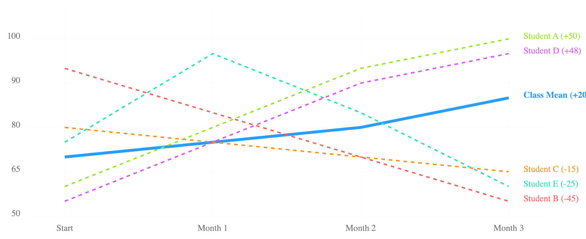
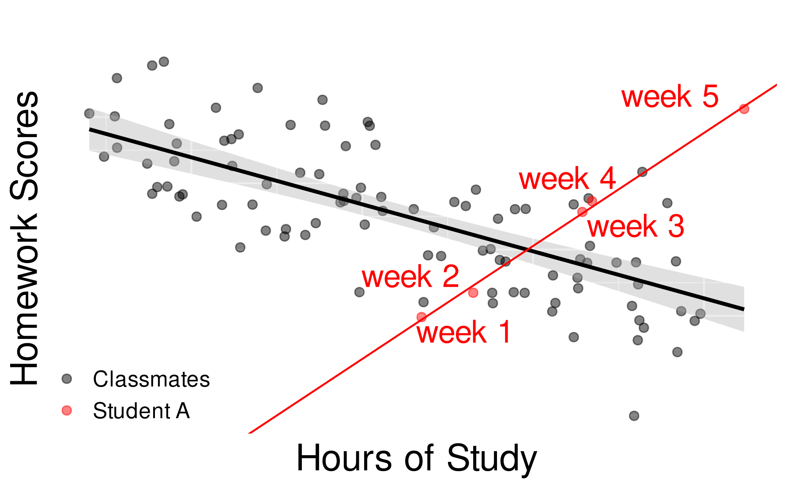
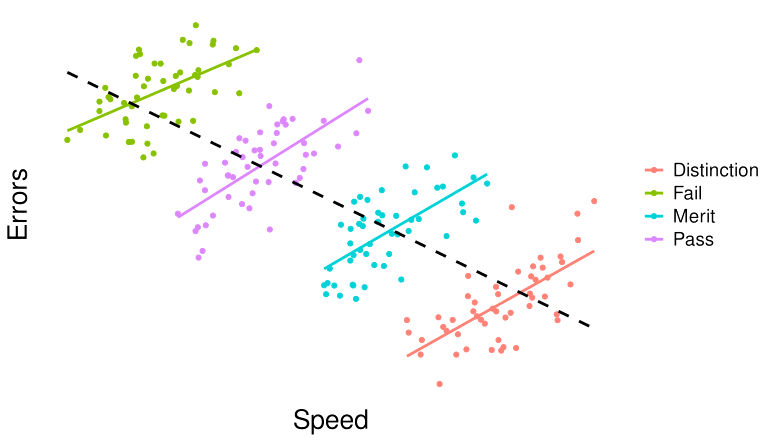

18 Individualized Analytics: Within-Person and Idiographic Analysis
1 Introduction
The last decades of education research witnessed a rapid increase of data availability and advancements in quantitative methods powered by the rise in computing power and methods [1]. Such an increase has motivated the emergence of data-intensive fields, namely learning analytics and educational data mining. Learning analytics is a relatively nascent field that aims to understand and optimize learning and learning environments by utilizing the burgeoning amounts of available data through digital —and non-digital— tools [2, 3]. However, the abundance of data and the availability of methods have mostly resulted in scaling across samples, populations, and institutions rather than building highly precise person-specific solutions [4]. In other words, learning analytics tried to build algorithms that could work across a population (e.g., a course or an institution), for instance, to predict the students who may drop out using data from previous years or other classrooms [5]. The premise was that by gathering more data we will be able to use more powerful algorithms, to obtain more accurate predictions and to perform more effective interventions. However, that has not been the case. So far, few are the systems that have been implemented across institutions, and far fewer are the systems that have delivered those predictions or proved to scale up if any [6].
Several studies have proven that scaling, generalizing, and applying a one-size-fits-all strategy is ineffective, no matter how hard researchers have tried to gather more data, use fancy algorithms, or bigger samples, go with multimodal or triangulate across multiple sources of data [7, 8]. The failure of big data to deliver big returns stems from the innate fragility of the idea that the sheer size of the data will automatically lead to more accurate and effective results. The reality is that more data from a larger sample cannot solve problems of individualized learning, nor can it account for the complexity of learning or individual differences [9].
In garish contrast to the one-size-fits-all approach, person-specific methods aim to precisely model each individual, from their own data, find the distinct unique peculiarities of each, and tailor models to their own needs to deliver accurate and adaptive learning experiences [10]. By definition —or by design— the focus is narrower and the resolution is equal to a single student or what is often referred to as N=1, single subject, or idiographic. Person-specific (i.e., idiographic) methods have been advocated not only to address the shortcomings of other methods but also for their potential strengths and advantages [11, 12]. These methodologies originate and have been widely discussed in psychological and social sciences [13–15], however, so far under-used in education.
In this chapter, we will introduce these approaches and offer a background about idiographic and within-person analysis in general. We will first present an overview of relevant concepts such as nomothetic, idiographic, and within-person analysis. Next, we will review issues with the dominant nomothetic approach, namely, poor generalisability. Finally, we discuss the potential as well as challenges, and limitations of idiographic methods for learning analytics.
2 Background
Two types of approaches are commonly used: between-person and within-person. The first approach is widely prevalent in science at large —and in education in particular— and entails collecting data from a sample, analyzing the data, and drawing conclusions. The other approach entails collecting data several times from an individual —or multiple individuals— and analyzing these data variations across time compared to the previous self. In the next section, we will explain in detail these approaches, their rationale, and how they relate to idiographic analytics.
2.1 Between-person (nomothetic approach)
Nomothetic, between-person, inter-individual, group-level, or population-based research are mostly synonymous terms that converge to the same idea of collecting data from a group of different people to study their inter-individual variance [10, 16]. As shown in Figure 18.1 A, where data are collected from different people at a point in time i.e., cross-sectional. The premise is: studying a group of individuals would allow researchers to model the overall trends or obtain summary measures e.g., mean or median. We may collect data from a group of students and we would say that the average of the group represents the summary or the average level of engagement that most students are assumed to revolve around [10, 16, 17].

Similarly, the variable-centered approach is another type of between-person research paradigm that focuses on the relationships among variables rather than the individuals themselves. All of these approaches are similar and represent the same idea of studying multiple people to capture enough variations. In all of such cases, it is assumed that the results generalize to most students. In fact, it is assumed that the findings of this approach are generalizable norms that everyone more or less conforms to. Deviations from these norms are considered outliers, noise, or exceptions. To date, most of the research is done with this approach, and nomothetic or between-person research is dominant and can be seen everywhere [18].
2.2 Within-person
Within-person research captures the intra-individual mechanisms, variations, and changes within the same person (or sometimes multiple persons) over time or occasions. It compares individuals to their own past self to capture how individuals’ experiences, behaviors, or psychological states fluctuate over time compared to their own average. As shown in Figure 18.1 B, data is collected from the same persons repeatedly to measure the intra-individual variations or changes (often called the within-person variance) [10, 18].
Suppose a student scores a 9 in mathematics. In the next exam, she scores a 10. That indicates that her performance improved from her past self. If we have her average score for the last 10 exams, and it was 8.5, we can say that she is improving compared to her past self, and given that the last two exams were 9 and 10, she is on an ascending trend. If she obtained a grade of 7, it would be lower than her average. In turn, if we took another student with an average of 5, a grade of 7 would be an improvement from her own average. These are within-person variations given that we are comparing variations within the individual. This approach can be generalized to other processes, e.g., engagement, self-regulation, and well-being —to mention a few. In such a case, we will say that the engagement of a student has improved (compared to her own previous engagement). Put another way, the comparison is strictly within the same person. This is why it is called within-person.
Using a within-person approach, we can study how learning processes change by tracking the intra-individual fluctuations and the factors that affect them [19]. We can also identify the patterns and trends within the person, highlighting how different contexts or situations can impact the person’s behavior. To summarize, the within-person approach collects data from a person or multiple persons over several time points, and analyses how variables change within individuals over time.
When within-person research addresses a single person, it is referred to as idiographic (N=1 or single subject) [20–23]. One can say that it is a special case of within-person analysis and in fact, the dominant one. As shown in Figure 18.1 C, idiographic research collects data from a single person and seeks to give person-specific insights about that exact person [10, 16]. Idiographic research can address many people but still would study each and every person separately as a whole unit of analysis. Therefore, findings through idiographic methods cannot be expected to generalize to other persons.
It is worth mentioning that not all within-person-analysis is idiographic, some of it averages across students to create average within-person variance and therefore, it is not idiographic (because we have data from more than one student).
3 Does group-based research generalize to individuals?
The basic rationale for group-based or nomothetic research rests on the assumption that variance observed between individuals (between-person or inter-individual) mirrors the variance observed within individuals (intra-individual or within-person) [10, 19, 24]. When we gather data from many individuals to capture several situations and variability, we will be able to capture enough variations similar to what happens within the person or persons. In other words, since it may be difficult to gather data from the same person one thousand times to capture all possible variations, we can collect data from one thousand people to gather enough variations. We assume that these two variations are essentially the same. This means researchers assume that patterns of behavior that can be observed at the group level can also be generalized to the individual level. This assumption is problematic for several reasons. We will explain it in detail in the following subsection [5, 11, 13].
3.1 Ergodicity
A key theoretical framework to understand the between/within-person mechanisms is the theory of ergodicity [10, 25]. In short, a group-level variance of a variable (e.g., motivation) generalizes to an individual-level trend if and only the variable meets the ergodicity conditions [10, 26].
Homogeneity means people are similar or homogeneous with no significant differences. The values of a variable are consistent so that if we select any individual, it would yield comparable results without impacting the study’s outcomes.
Stationarity means the variable remains stable over time. So, it won’t matter when we are collecting data, the variable doesn’t change over time in any way.
However, we know that there is significant heterogeneity and differences among the population and many psychological constructs evolve over time. Therefore, ergodicity is neither realistic nor has been ever empirically found. In fact, the mounting evidence across all psychological processes is that they change over time, and vary across populations. Therefore, group-level analysis poorly reflects each individual or any individual in particular [10, 26, 27].
3.2 Ecological fallacy
Ecological fallacy refers to the logical error of biased inferences about individuals based on aggregate data from groups or populations. In other words, thinking that between-person transfers as is at an individual level. This fallacy occurs when researchers assume that the observed relationships at the group level hold true for all individuals within that group, leading to potentially misleading conclusions [24, 28].

Imagine a study that measures student engagement in two groups of students who are exposed to two different teaching methods (Figure 18.2). Both groups have an initial engagement of 6 out of 10. After the intervention, Classroom B has an average engagement score of 9 out of 10, while Classroom B has an average score of 7 out of 10. Based on these averages, one might conclude that all students in Classroom A have improved their engagement to a greater extent than those in Classroom B. However, this is an example of ecological fallacy. In Classroom A, some students might have their engagement scores decreased (e.g., 4 or 5) and in Classroom B, some students may have their engagement improved. In other words, it is the aggregate average that improved, driven by some students in both classrooms but not each and every student. This fallacy can lead to erroneous interpretations and ineffective policy recommendations. A stark case of ecological fallacy is Simpson’s paradox which we will detail next.
3.3 Simpson’s paradox
To grasp the idea of ecological fallacy even more, let us consider the following scenario, known as Simpson’s paradox [29]. Simpson’s paradox occurs when the direction of a relationship at the group-level is the opposite than at the person-level, e.g., increases on average and decreases for the individual.
Figure 18.3 shows the simulated relationship between homework scores and hours of study of all students (N=20) over five weeks. You observe that there is a clear negative correlation between these variables on average (i.e., the more study hours, the lower the scores). Therefore, the teacher might consider reducing the amount of homework in the following week, or offer help to those who study a lot, but this results in relatively lower homework scores. However, if you focus on Student A, you notice that there is a totally opposite trend in her learning outcome.

In other cases, Simpson’s paradox is more systematic. Let us take an example, students who are competent at mathematics are more likely to be fast in solving problems and make fewer mistakes than students who are less competent. The black line in Figure 18.4 shows this average trend. One can conclude that there is a direct positive relationship between speed and maths proficiency (at between-person level). However, even within the competent group, the faster they attempt the math problems, the more likely they are to make errors. In that case, there is a direct negative relationship between the speed and accuracy of problem-solving (at the within-person level).

4 The idiographic approach
The previous section reviewed the theoretical rationale behind between vs. within-person approaches. In this section, we consider the potential and challenges of an idiographic, person-specific approach.
4.1 Why idiographic methods
Group-level insights obtained by nomothetic analyses do not necessarily apply at the individual level [4, 24, 30]. In other words, there is no average person that would fit our expectations of the average. There are numerous examples in the recent literature that group-level insights do not generalize to each individual [31, 5, in psychology: 24, e.g. in education: 4, 32]. In addition, in many cases, group-level insights can be also biased toward over-represented groups of subjects [33, 34]. In learning analytics, for example, students with disabilities have been an underrepresented group in the literature [35]. Hence, the idiographic approach allows to reflect individual subjects through fine-grained person-specific analyses as well as overcomes the fairness issues encountered by nomothetic approaches.
Furthermore, idiographic methods may provide an answer to the poor generalizability of group-based analysis by offering an alternative that could provide precise personalized insights to each individual [10, 36]. In other words, individuals could rely on their own data instead of relying on analysis generalized from others. It stands to reason that if precise individualized insights or interventions are needed, we use methods that reflect the person herself.
Data collection through or with personal devices may bring privacy advantages [37–39]. Since the idiographic approach does not aggregate data across people, ideally it would be possible to complete the process of analytics, from data collection to giving feedback, within the digital devices of each individual so that the collected data are not shared by anyone else [38]. However, if idiographic analysis is used for a clinical purpose, the data is necessarily provided to the practitioner, essentially involving ethical consideration.
4.2 Challenges to adoption and implementation
Despite its significant potential, the adoption of idiographic methods in behavioral sciences has been remarkably slow [40], especially in education research [11]. This is primarily due to data collection as this approach necessarily requires a large amount of micro-level data from a single individual [11, 41]. However, recent technologies such as mobile phones and wearable devices have rapidly advanced data availability for idiographic analysis [11, 42]. In addition, the development of computational power and methods has also increasingly allowed for idiographic research [11, 13, 26]. Thus, more research and practice would be anticipated to employ idiographic methods in the future.
Additionally, choosing measurement intervals is another challenge in practice [13, 42]. For example, autoregressive models are a commonly used statistical technique of idiographic analysis, and the models allow to investigate the correlation between different variables over time lags [22, 26]. However, this method only reveals the correlations at a given lag. This could cause problematic evaluation or measurement unless the stationary assumption holds [42]. The stationary assumption implies that relationships between variables do not change within the measurement time, which of course, could happen. For instance, if two variables do not satisfy the stationarity condition, it is possible that their relation could be positive in the first half of the semester and negative in the second half, concluding on no relationship on average.
To address this issue, researchers can employ various methods to test for stationarity. If data is found to be non-stationary, techniques like differencing or transformation (e.g., logarithmic or seasonal adjustments) can help stabilize the mean and variance, allowing for a more accurate analysis of relationships over time. For example, Fisher et al. [43] collected idiographic (person-specific) multivariate time series data, where data were found to be non-stationary and the intervals were not uniform. So, the authors first fit an ordinary least square linear regression model so that residuals are the fluctuations from the regression line (i.e. trait), and subsequently, a cubic spline interpolation was applied to address the uneven intervals [43]. In cases where idiographic analysis may be difficult, some forms of within-person analysis could offer an approximation of the idiographic variance [44].
5 Data and methods for within-person and Idiographic analysis
In this section, we provide a literature review of the existing within-person, idiographic research potentially relevant to learning analytics, focusing on common data sources and methods.
5.1 Data
Within-person analysis —and also idiographic methods— requires repeated data collection by design to be able to capture enough variations of the participants. Therefore, the hallmark of data collection for such an approach is repetitive data collection, be it through surveys, sensors, or digital data. Given the widespread adoption of quantitative methods, intensive longitudinal data collection methods have become highly common. We first delineate several data sources. Then, the key data collection methods, Ecological Momentary Assessment (EMA), and Experience Sampling Method (ESM), will be explained.
5.1.1 .Data sources
5.1.1.1 Self-reported data
In behavioral sciences, collecting self-report data —often through some form of a questionnaire— is widely used to measure psychological constructs that are otherwise difficult to directly evaluate. The self-report approach is also used for the within-person analysis. Self-reported data collected within this context differs from the data collected when adopting a between-person approach. In between-person research, the focus is often on overall perceptions and experiences, with questionnaire items being phrased as “I often think…”, “In general, I like…”, “Overall, I do…” [27]. In within-person research, instead, the focus is on capturing in the moment feelings or attitudes, and therefore, questionnaire items are phrased accordingly, e.g., “Right now I feel…”, “At the moment, I am…”, etc. Also, these surveys are shorter and repeat multiple times per day to gather several time-points for each individual across time. These surveys are called experience sampling or ecological momentary surveys given that they collect experiences as they occur and therefore less prone to recall bias.
Also, well-known questionnaires that are often applied in between-person research, e.g., Motivated Strategies for Learning Questionnaire (MSLQ) [45], are not directly applicable to within-person research, as they would need to be rephrased to capture the momentary experiences of the research subjects. There are questionnaires that are already suitable for this purpose, such as the Positive and Negative Affective Scale (PANAS), which aims to capture momentary emotions [46].
A key limitation of self-report data is the potential bias in the subjective self-assessment of a participant. If everyone has different magnitudes of self-report bias, conducting between-person analysis on self-report data might introduce a significant overall bias. However, the self-report bias would potentially be reduced in within-person analysis because it focuses on the fluctuation relative to the past. Nonetheless, it may be important to complement self-report data with other data sources described below [47, 48].
5.1.1.2 Digital log data
Digital mobile devices, learning management systems (LMS), and applications constantly collect data for every action or click. Similarly, self-tracking apps which can log students’ study habits, location, or social interactions, creating a broad picture of how these factors influence their academic performance.
Saqr [5] used the log data in an LMS from 286 students across 48 module instances. Then mixed linear models were fit at traditional group-level and as the hybrid of between- and within-person to predict the final marks. As a result, the within-between hybrid model demonstrated better performance than the group-level nomothetic model, indicating that within-person factors or trajectories reflect academic performance [5]. Another interesting example is the analysis of self-reported data combined with digital footprints collected from smartphones by Aalbers et al. [49]. In this extensive study, 247 university students self-reported their subjective stress five times a day at random points. In addition, the log data on their smartphones such as use of specific applications were extracted. Machine learning models were trained with the survey data merged with the log data for both the group-level (nomothetic) and each individual (within-person). The findings showed that sleep hours and prolonged social network apps consistently predicted momentary subjective stress at group-level [49]. However, these variables were not sufficiently predictive for most students at within-person level, and what digital markers explain the subjective momentary stress significantly varied between persons [49].
5.1.1.3 Physiological data
Additionally, physiological data from wearable sensors could be also used for within-person analysis. This type of data could, for instance, help track physiological responses, such as heart rate or electrodermal activity, and may offer insights into, e.g., how stress affects learning.
Dhindsa et al. [50] investigated the phenomenon of mind wandering of students during live lectures by recording electroencephalography (EEG). 15 medical students attended an orthopedic surgery lecture wearing caps to measure EEG, and students were also asked to self-report the degree of mind wandering around every four minutes during the lecture. Discriminative spatial filters and support vector machines were applied to the data to classify whether the participant was in the mind-wandering state or not. In particular, machine learning models were fit at both group (nomothetic) and individual (within-person) levels. The results verified that key EEG factors for mind wandering which had been previously reported in laboratory settings were somewhat reproduced in the live lecture setting on average, while individual patterns were highly heterogeneous [50].
5.1.1.4 Other data sources
Other data sources also include daily diary methods where students —or their parents and teachers— might keep a daily diary documenting their academic experiences, challenges faced, and strategies used [51]. Also, interviews with students about their learning experiences can complement quantitative data, providing a richer narrative. For example, Ordem [52] tracked a single student studying German as a second and foreign language and collected diary as well as monthly interview data for qualitative analysis of the dynamics of motivation in language learning. The result showed that the participant’s motivation was negatively affected by a lack of linguistic self-confidence and the problem of social milieu [52].
5.1.2 Data collection methods
5.1.2.1 Ecological Momentary Assessment and Experience Sampling Methods
Ecological Momentary Assessment (EMA) involves collecting real-time data about a participant’s experiences in their natural environment (hence the name ecological). The data collection can be done through observation, physiological sensors, or through self-reports. For example, in an educational setting, students might be asked to report their attitude about a specific subject or task at various points throughout the day. A student could receive a phone notification asking about their belief in their ability to do their learning tasks (self-efficacy). Typically, this is repeated several times a day and over some time (weeks or months) to record the fluctuations in self-efficacy and how they correlate with other variables e.g., performance, engagement or lesson subjects.
For instance, Respondek et al. [53] employed EMA to collect survey data from 98 undergraduate students during an exam week. In this study, participants received notifications on their mobile devices at three randomly selected times a day, and asked to report their achievement emotions. The EMA data combined with the exam grades were then analyzed using structural equation modeling. The results indicate the potential impact of previous experience, in addition to trait (within-person expected value) and situation (cross-sectional expected value at that time point or state), on the achievement emotion [53].
Experience Sampling Method (ESM) is similar to EMA—and oftentimes they are used interchangeably—but may involve scheduled prompts, encouraging students to reflect on their thoughts and experiences at preset times. As the name implies, it aims at capturing students’ experiences when they happen and as close to the natural environment as it can happen, to avoid recall bias [54]. Similar to EMA, educators could use ESM to gauge students’ engagement and motivation during different classes throughout the week.
[55] used data from students over several weeks to study their self-regulation and reveal the idiographic variations among each student. In another study by the authors, they used EMA data to predict student studying and regulation and reported that each and every student had unique predictors [4]. Xie et al. [56] carried out ESM on 52 undergraduate students during two pre-exam weeks. In the study, participants were asked to respond through a mobile application to surveys after planned study-related events (thus experience-based sampling). Hierarchical regression analysis on the collected data revealed that situation-specific self-efficacy is highly related with engagement (i.e. how well students engaged with the planned events) [57].
Another example of the use of ESM is a more extensive study by Muenks et al. [58] who collected survey data from 902 undergraduate students after every STEM class over two weeks. The surveys asked about students’ psychological experiences in the STEM (science, technology, engineering, and mathematics) classes in order to investigate the effect of their perception on professors’ mindset beliefs about students’ intelligence ability. The findings demonstrated that, when students perceive that their STEM professors have a fixed mindset, this perception tends to negatively affect their psychological vulnerability, in-class engagement, and even the dropout intention [58].
Given that these methods gather data at the moment, they are commonly referred to as momentary data. The analysis of momentary data either collected by ESM or EMA could reveal patterns, changes and fluctuations and most importantly, enable within-person analysis as we have enough data points with enough power to enable within-person or idiographic analysis.
5.2 Analytical methods
Quantitative data collected through EMA/ESM are essentially multivariate time series, containing information about temporal processes of individuals. Here we provide several examples of approaches to handle such types of data for within-person, idiographic analysis.
5.2.1 P-technique
The most classical —yet still impactful— method for within-person analysis is the P-technique. The original P-technique developed in 1940’s is essentially a factor analysis applied to data obtained from a single individual, while to date several extensions have been proposed to deal with more nuanced information of temporal changes. The factor analysis approach has an advantage over other network analysis approaches (to be subsequently presented) in that it handles latent variables, or factors. Thus, this method would be suitable for testing theory or identifying latent constructs.
For example, Musher-Eizenman et al. [59] employed the P-technique dynamic factor analysis [60] to study the relationship between children’s perceived control over their work and their academic achievement taking into account concurrent and lagged effects within individuals. A total of 152 primary school pupils in Germany were included in the study, and participants were asked to self-report psychological indicators (e.g. motivation, anxiety) after each homework assignment and after the return of graded assignments for German and maths classes. First, the within-person dynamic factor analysis failed to replicate the previous findings by cross-sectional analysis that children with better control over their work achieve higher academic performance and showed that rather there are greater individual differences in the relationship between perceived control and achievement [59]. Second, the within-person analysis also demonstrated that compared to low-achieving pupils, high-achieving pupils exhibit a clearer pattern that the perceived control and performance predict further control in the subsequent time points, perhaps indicating more organized control for high-achieving children [59].
5.2.2 Graphical VAR
The recent advancement in network science has extended several psychological networks methods to within-person, idiographic analysis. This is particularly useful when an analyst is interested in the temporal changes (i.e., how the previous state affects the following state) and the contemporaneous processes (i.e., how different constructs co-occur simultaneously) of observed constructs in individual subjects [22, 44].
Graphical vector autoregression (VAR) models are especially useful for fully idiographic, person-specific analysis. They are able to capture the temporal and contemporaneous processes of psychological constructs within a single subject. For example, Saqr and López-Pernas [61] collected survey data by the EMA method from an undergraduate student (N=1) once a day for the duration of a month. The survey questions represented common dispositions of self-regulated learning such as motivation, reflection and planning. After the linear trends in variables were removed to approximately ensure the stationarity, graphical VAR was applied. The findings indicated that for the participant, the feeling of hope as well as motivation positively affect the task engagement on the following day, while working on assignment negatively correlates with the engagement on the following day [61]. Other examples can be also seen within the same authors’ work on self-regulated learning where they studied the network models of 18 students and showed that each student has a different profile of self-regulation. The authors concluded that if personalization is the goal, then idiographic methods should be prioritized [55].
While the previous example utilized temporal networks, Malmberg et al. [62] employed contemporaneous networks in addition to temporal ones to investigate metacognitive monitoring in collaborative learning in the context of self-regulated learning. Video data of 12 upper secondary school students during collaborative work of an advanced physics course were collected, and monitoring events were manually coded. The within-person analysis of contemporaneous networks by graphical VAR suggested that different monitoring phases (e.g., task definition, goal setting) tend not to co-occur in a short time window, but rather monitoring events within a group lead to enactment before the group proceeds to another phase of regulation [62]. In addition, graphical VAR analysis on the within-person temporal networks showed that motivational interactions lead to monitoring of task definition and task enactment in the following step, driving the early phases of task execution [62].
5.2.3 Sequence mining
Another approach to working with time series, especially longitudinal, data is sequence mining. While collecting self-report data through EMA/ESM from the same individuals over a long period of time (e.g. several months) could overload participants, log data or physiological data automatically collected through LMS or portable digital devices could be relatively longitudinal. Sequence mining allows for within-person analysis of such data to investigate sequential patterns of learning strategies of students or educational interventions.
Saqr et al. [5] collected LMS activity log data of 135 students for 10 successive modules in a higher education program of healthcare (corresponding to the period of three years). At the lowest level, for each student and for each module the sequences of activity log were segmented into sessions such that each session represents a non-stop learning activity. Then the series of sessions were clustered into tactics within each module for each student. Subsequently, these tactics were coded as individual module-level learning strategies for each module and each student. Finally, the series of module-level strategies were clustered over the participants to detect program-level trajectories. The results showed that at the program-level students’ learning trajectories fall into three types: stable, fluctuating, and light interactive [63]. Additionally, it was demonstrated that only a small subset of students with stable, intense trajectories showed consistent strategies over different courses (i.e., transferred the strategies) [63].
5.2.4 Idiographic machine learning
The increasing availability of big data at the individual level allows for applying machine learning. The idiographic machine learning approach potentially exhibits enhanced predictive power while transparency and interpretability would be reduced for complex models compared to other parametric within-person analysis.
Saqr et al. [4] collected survey data from 17 secondary school students twice a day for 45 days using the EMA method. Three machine learning models are applied to predict key SRL variables (effort, metacognition, motivation, and enjoyment): RF, elastic-net regression (ENR), and the best-items scale that is cross-validated, correlation-weighted, informative, and transparent (BISCWIT). Similarly to the previous example, the results indicated that the predictability of the machine learning models differed across individual participants [4]. In addition, feature importance on prediction also varies across individuals. Moreover, the authors also applied the same machine learning techniques to the whole dataset (which is the nomothetic approach) and showed that the feature importance of the nomothetic models did not match any single individual’s feature importance [4].
Aalbers et al. [49] collected survey data five times a day as well as smartphone log data for app use over a maximum of 60 days. Then three different machine learning models are applied to predict the level of subjective stress at individual and group levels: least absolute shrinkage and selection operator (LASSO) regression, support vector machine (SVM,) and random forest (RF). Features included the use of particular categories of smartphone app, sleep, and timestamp information. The results show that the predictions of nomothetic models are positively correlated with the actual stress of most participants while the models’ predictions significantly differ from the actual values for a small subgroup of individuals [49]. The prediction performance was similar for the idiographic models; the idiographic modeling approach successfully predicted momentary stress, but for a minority of participants [49]. It should be noted that in this study, and often in general, the sample size is necessarily much smaller for idiographic machine learning than for the nomothetic models.
5.2.5 Group Iterative Multiple Model Estimation (GIMME)
Group Iterative Multiple Model Estimation (GIMME) integrates structural equation modeling (SEM) and dynamic modeling to capture both group-level and individual-level temporal processes [64]. It can be applied to longitudinal time series data for a group of people.
Chaku et al. [65] used a survey dataset that assessed working memory, somatic symptoms, anxiety, and intellectual interests of 26 college students over 75 days during the 2016 US presidential election and in 2017 (as a control group). Data collection employed the ESM approach, asking participants to complete the survey after 8 pm or after daily activity on electronic devices each day. The data was analyzed using one-lag GIMME, which produces group-level and person-specific networks that illustrate contemporaneous and lagged effects of the four variables on each other. The results demonstrated that on average the election group had higher network complexity, potentially reflecting the negative effect of the stressful time on learning-related processes [65]. However, the person-specific models exhibit noticeable differences from the group-level models for both the 2016 election group and the control group, which indicates remarkable heterogeneity on the relationship between negative psychological indicators and learning [65].
Thompson et al. [66] analyzed the effect of teacher feedback on students’ motivation in the context of an intervention program for children who tend to exhibit challenging behavior. After screening, 58 fifth-graders with challenging behavior were included in the study. Collected data included self-monitoring surveys of daily motivation and negative teacher feedback measured as the discrepancy between self-evaluation and teacher’s evaluation on the achievement of learning goal over 8 weeks. The analysis by GIMME showed that negative teacher feedback likely improves student motivation on the same day, while it negatively affects the subsequent day’s motivation [66]. Nevertheless, high heterogeneity is also observed, and at the individual level, some students exhibited that higher motivation leads to negative teacher feedback, potentially reflecting overconfidence in these students [66].
6 Discussion
In this chapter, we have introduced the foundations of within-person analysis, contrasting it with the dominant nomothetic approach in education research. Specifically, we have placed our focus on a special case of within-person analysis —idiographic methods— which aim to capture unique, person-specific variations. We outline the main data sources and methods used for within-person research, providing relevant examples from the literature.
Despite the evident strengths and wealth of insights that can be gathered from adopting a within-person approach —and from idiographic analysis in particular—, the adoption of this lens in education research has been relatively limited compared to other fields like psychology [67]. In psychology, such a lens has been extensively used to examine individual differences and temporal patterns in constructs such as mood and cognition [26]. In turn, education has been slower to integrate within-person analysis, largely due to systemic challenges such as a historical reliance on nomothetic paradigms [68], a lack of expertise in temporal analyses, and the complexity of collecting repeated, high-resolution data from individuals [4].
However, although the idiographic approach has not been that common in educational research, its practical applicability has been exploited to a somewhat larger extent. For example, personalized learning analytics dashboards are heavily utilized for students to be able to visualize their own data, monitor their progress, and —ideally— obtain actionable feedback [38, 69, 70]. Students in special education have been given individualized support based on their own specific needs. Lastly, adaptive learning technologies use idiographic principles to recommend customized content and pacing [56].
Lastly, it is worth noting that idiographic methods may require a privacy and ethics framework of their own [39]. On the one hand, idiographic analysis alleviates some of the concerns related to the nomothetic approach [38], since the results yielded from this analysis are completely individualized and therefore do not undermine minorities or suffer from the generalizability issues underlined in this chapter. However, this comes at the expense of intensive data collection for each single individual, often involving sensitive data [39].. As such, additional safeguards must be in place to protect participants’ confidentiality.
Throughout the subsequent chapters of the book, we showcase various methods suitable for within-person and idiographic analysis, accompanied by hands-on tutorials in R. For instance, we describe how to apply different forms of regression to capture between- and within-person relationships [21]. In another chapter we introduce psychological networks and demonstrate their application in modeling both contemporaneous and temporal between and within-person relationships, including the use of graphical VAR techniques [22]. Lastly, we also explore the use of automatic ML to scale the application of ML algorithms for idiographic analysis [23].